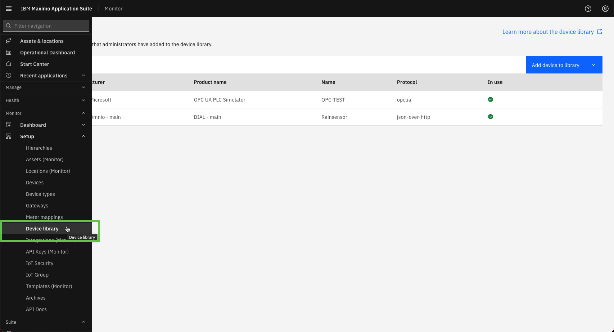
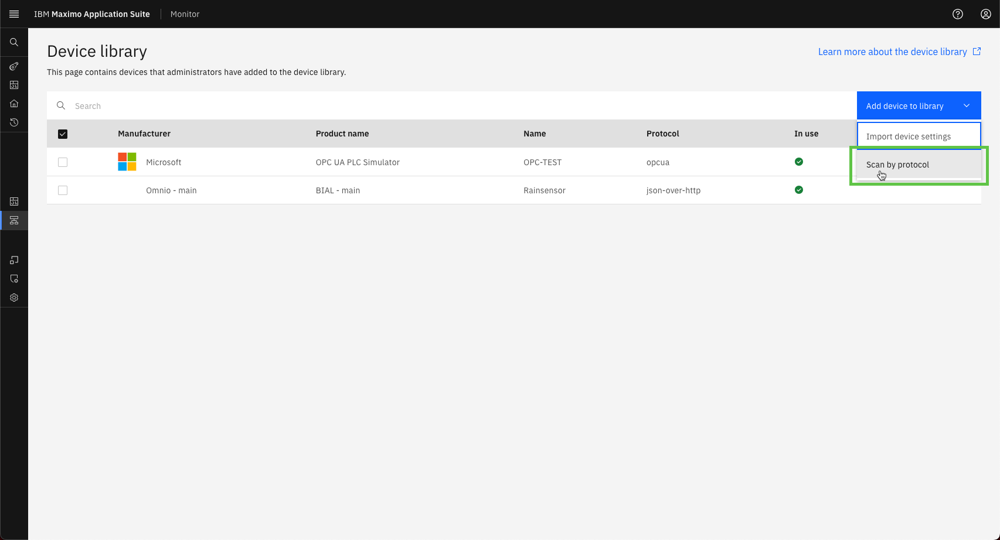
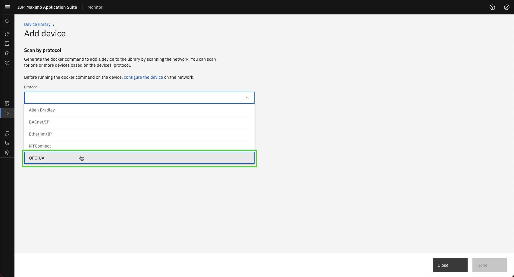
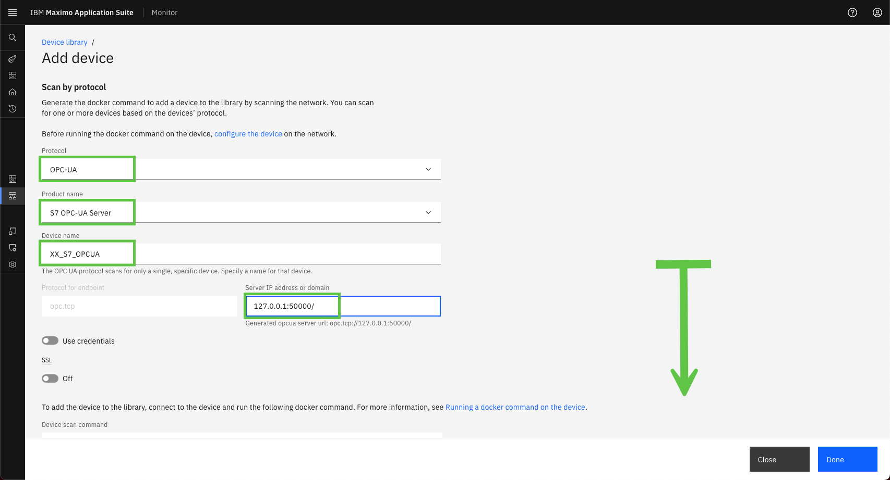
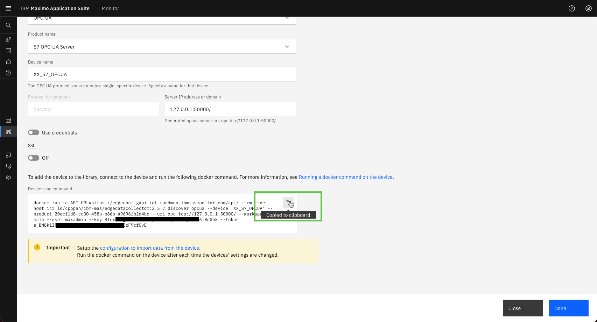
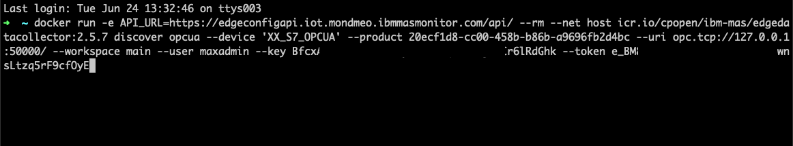
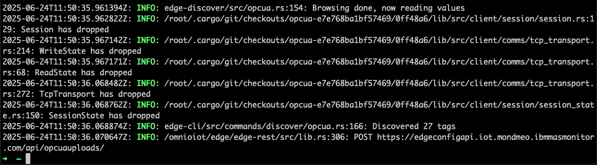
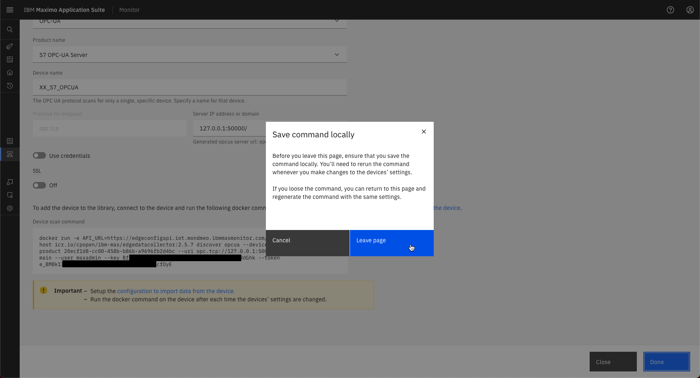
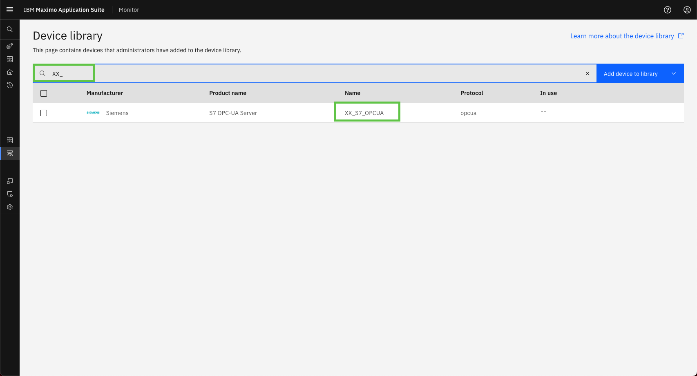
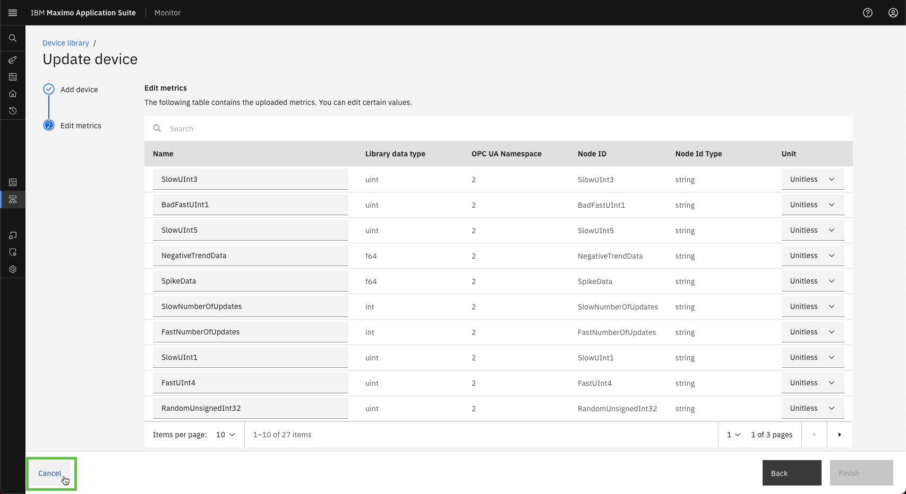

Objectives
In this Exercise you will learn how to add a device to the Device library.
Before you begin:
This Exercise requires that you have:
- completed the pre-requisites required for all labs
- completed the previous exercises
Since PLC's are very customizable you will need to add a new device to the Device library instead of using a pre-configured device in the Device library, like a Variable frequency Drive communicating over Modbus.
Navigate to the Device library page: 
For OPC UA devices it is possible to either upload a device configuration or to use the built-in data tag auto-detection functionality which is a lot easier.
Select Add device to library and the menu item Scan for devices:

Select the OPC-UA protocol: 
Enter the device details and scroll down: 
Tip
XX in the Device name should be your initials in case other people are following this lab in the same Maximo Application Suite environment.
Attention
If you see a BadTcpEndpointUrlInvalid error when you execute the docker command in a few steps,
then you might need to end the Server IP address or domain with a forward slash, like 127.0.0.1:50000/
Copy the Device scan command and don't click Done just yet:

Open a terminal window (Mac/Linux) or Command window (Windows) and run the Device scan command: 
Wait until it has finalized and returned to the command prompt. The new device has now been added to the Device library. 
Go back to the browser, click Doneand then Leave page:

Search for your new device in the Device library: 
Click on your new device to see the metrics (data tags) that was added to this device:

Click on Cancel once you are done looking at these beautiful data tags 🤗.
Congratulations you have successfully added a device to the Device library.